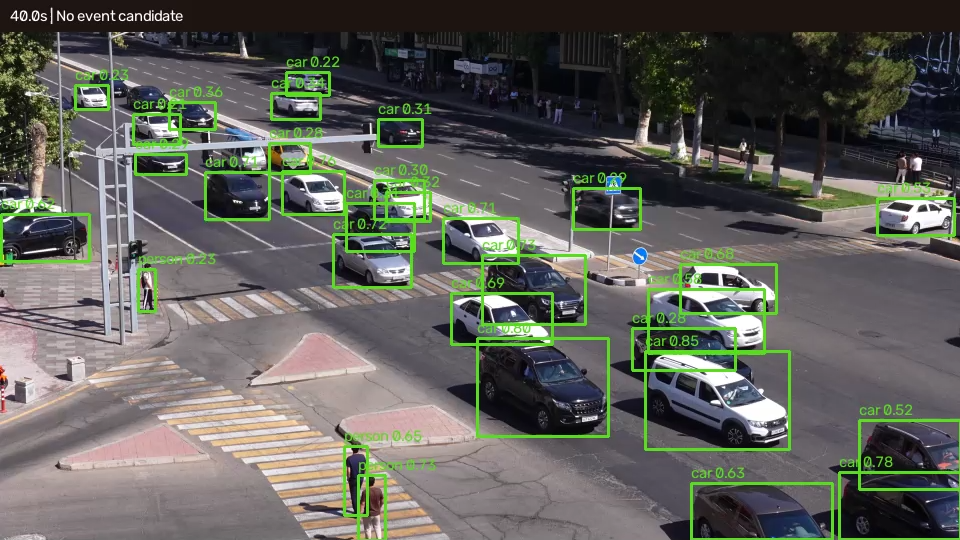

Inomov Saidkamol
Coordinates the project, connects the event pipeline, and brings the system components together.
QWEN / 01We are Qwen 3.8 — a three-person computer-vision team exploring local-first traffic-event detection and visual review.
Built for the WIUT computer-vision track · Runs locally · GPU-accelerated YOLO

Different parts of the same pipeline: from object detection and scene geometry to a demo that makes review practical.
Coordinates the project, connects the event pipeline, and brings the system components together.
QWEN / 01Works on YOLO inference, CUDA acceleration, and fixed-camera scene calibration.
QWEN / 02Builds the review experience, explores sample outputs, and checks the demo and results.
QWEN / 03Our prototype samples fixed-camera footage, detects road users, applies temporal rules, estimates risk cues, and creates an annotated video for human review.